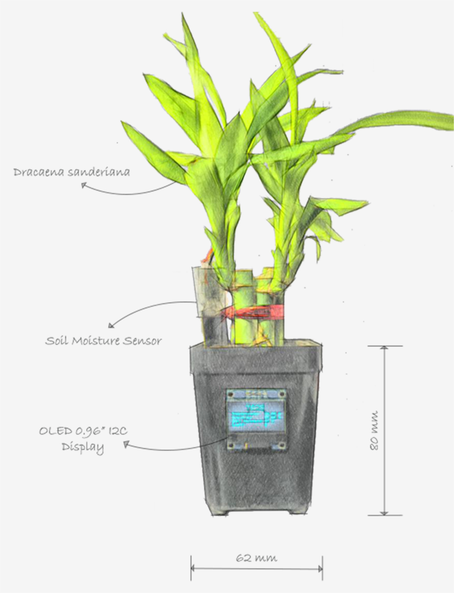
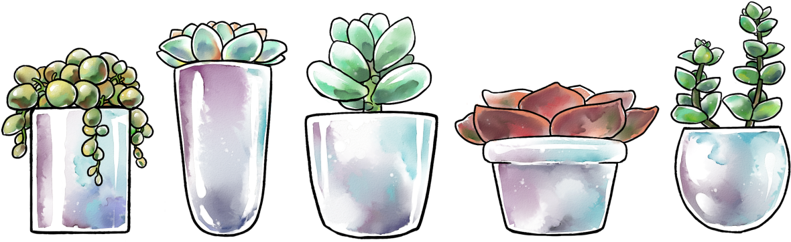
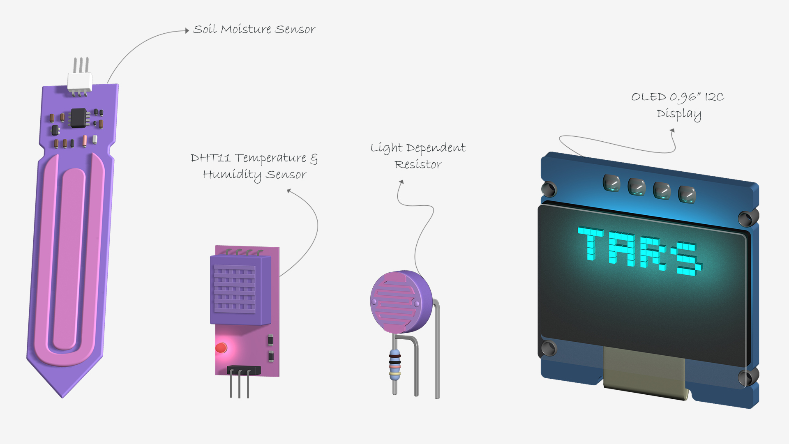
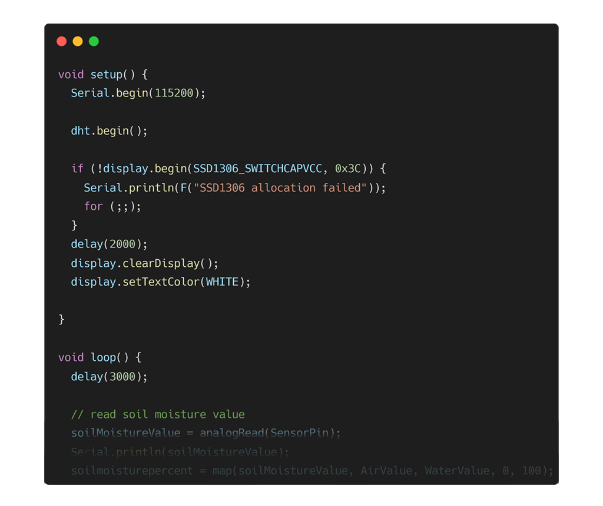
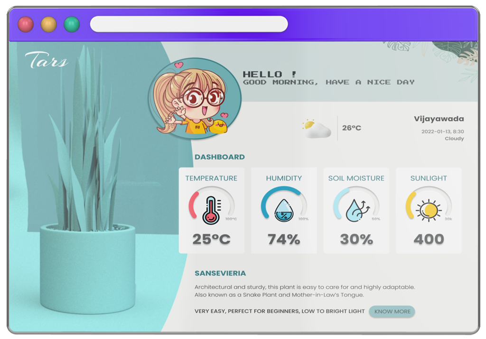
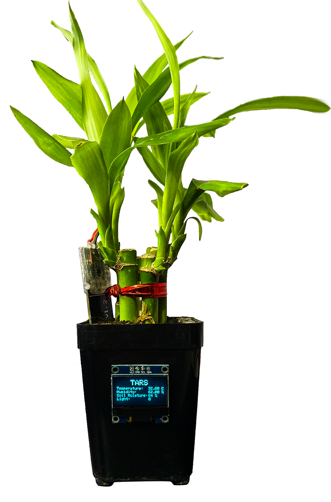

Tars - Smart Planter
To water or not to water: that is the question!
For most species of plants, light, water, air, and nutrients are all essential for their survival and reproduction. Plants can die, depending on the temperature, too much watering, underwatering, or exposed to too much sunlight. Tars monitor these conditions to help you take better care of your plant. Whenever there is something wrong with the plant or its environment, the plant will alert you to the problem.

Why did I build the Tars?
A good friend of mine once gifted me with a plant. I didn't know much about plants back then, I overwatered it, and it died. I scoured the city for the same plant and ultimately found one in the same store my friend bought it.
The plant was once again killed. Unlike last time, I was away from home and had no way of monitoring the situation. The plant died after being overwatered. Some plants aren't supposed to have cared.
How do the Tars work?
Tars is a product of the Internet of Things. With the help of some sensors like soil moisture, temperature and sunlight detection sensors, it keeps you updated about the current conditions of your beloved plant.

The sensors are all connected to the NodeMCU's ESP8266 wifi module. After writing a few lines of code and uploading the Arduino sketch to the development board, the data appears on the OLED display.

How can I monitor the health of my plant?

The web application monitors soil moisture levels, temperature and humidity of the surroundings, and sunlight, to help you take better care of your plants. This data is retrieved from an API, so if anything goes wrong with the plant or its environment, the application will notify you so that you can take care of the plants.
The project is currently in progress

It is a prototype, not the final design. The planter and its web application interface are in progress. I am currently experimenting with the new sensors and readings, in talks with my buddy to collaborate and build an API, and designing the planter to keep the original shape of the plant pot that I was gifted.